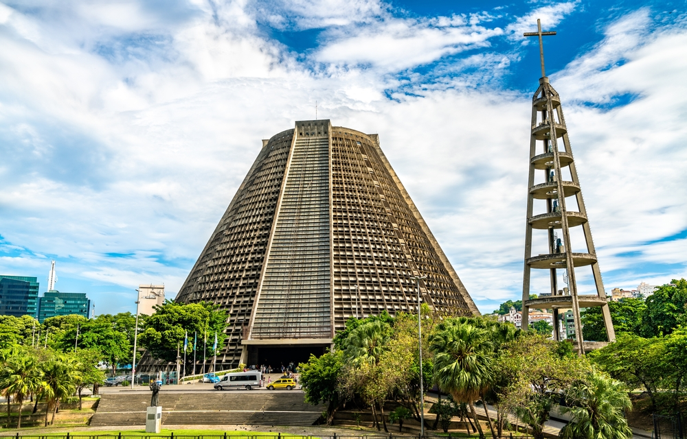

Rio de Janeiro, a capital do Brasil e mundialmente conhecida como a "Cidade Maravilhosa", é um dos principais centros globais de cultura, moda, gastronomia e arte, situada às margens da Baía de Guanabara. A cidade encanta por sua rica história, arquitetura emblemática — destacando monumentos como o Cristo Redentor, o Pão de Açúcar e a Catedral Metropolitana — e uma atmosfera vibrante única. Composta por diversos bairros que misturam o charme histórico com a modernidade, o Rio abriga museus renomados como o Museu de Arte Moderna, além de vibrantes praias e butiques de alta costura, tornando-se um destino inesquecível e um dos mais visitados do mundo.

Na imagem acima, podemos ver o icônico Cristo Redentor, um dos símbolos mais reconhecíveis do Rio de Janeiro e do Brasil, iluminado à noite, oferecendo uma vista deslumbrante e romântica da cidade.
Na imagem acima, podemos ver o Pão de Açúcar, outro ícone do Rio de Janeiro, que oferece uma vista panorâmica incrível da cidade.

Na imagem acima, podemos ver a Catedral Metropolitana, um dos exemplos mais notáveis da arquitetura moderna, famosa por seu design único e sua história rica.
Assim como Lisboa, Barcelona também é conhecida por sua arte e cultura.
Quer saber mais sobre Rio de Janeiro? Clique aqui